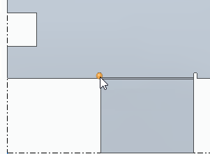
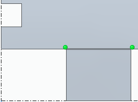
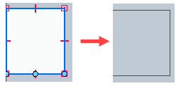

Relief Patch command
Use the Relief Patch command to remove undesired reliefs in the flat pattern that are not needed in manufacturing.
Note:
The command is disabled if no flat pattern exists.
To select the relief to patch, do one of the following:
Click a bend edge within an individual relief area

Press the A key to select all eligible relief areas.

Draw a profile in the relief area that you want to patch.

How do I
Construct a flat pattern in the sheet metal part documentApply a patch to relief in a flat pattern
Save and flatten a sheet metal part
Learn more
Flattening sheet metal partsCreating flat pattern drawings
Look up more details
Flat Pattern commandFlat Pattern command bar
Flat Pattern command bar
Flat Pattern Options dialog box
Relief Patch command bar
Save As Flat command
Save as Flat command bar
Save As Flat dialog box
Save As Flat DXF Options dialog box
Layers tab (Save As Flat DXF Options dialog box)
Bend Data tab (Save As Flat DXF Options dialog box)
Font Mapping tab (Save As Flat DXF Options dialog box)